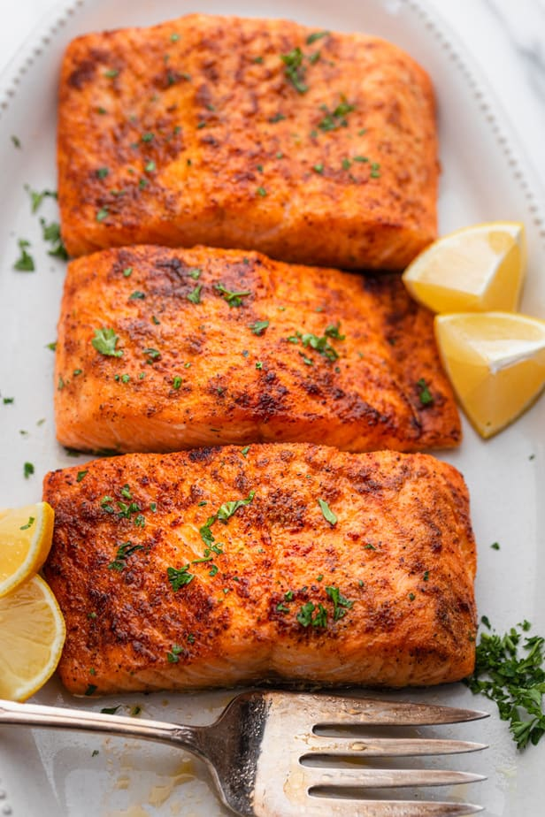

Air Fryer Salmon

Description
Guys, this air fryer salmon has changed my salmon game. It’s loaded with flavor, and the air fryer gives it a crusty, crisped exterior while keeping a consistently juicy, buttery interior texture. Each piece just gently slips apart when you press a fork on it, and it is utterly delightful. This one goes in my forever files!
Ingredients
- 1lb salmon
- 1 tablespoon brown sugar
- 1 teaspoon paprika
- 1 teaspoon smoked paprika
- 1/2 teaspoon chilli powder
- 1 teaspoon onion powder
- 1/2 teaspon garlic powder
- 1 teaspoon cornstarch
- 3/4 teaspoon coarse kosher salt
- 2-3 teaspoons avocado or olive oil
- Prep the salmon: Remove the skin from your salmon, if it has skin. Pat with paper towels so the surface is mostly dry. Cut your salmon into cubes, 1 to 2 inches each
- Prep the spices: Mix the spices together in a small bowl.
- Toss salmon with spices: Toss your salmon cubes in the spices and oil – I usually use my hands to mix it all together.
- Air fry the salmon: Place your salmon pieces in the air fryer (I just dump them right in) and spread them out a bit so they’re not laying all over each other. Air fry at 400 degrees for 8 minutes!
- You’re Done! Yum! At this point it should be textured and golden on the outside, and juicy and delicious on the inside. When you press each piece with a fork, they should easily flake / slip apart with a buttery, juicy texture inside. (You can do 6-7 minutes if you prefer more of a medium doneness.)